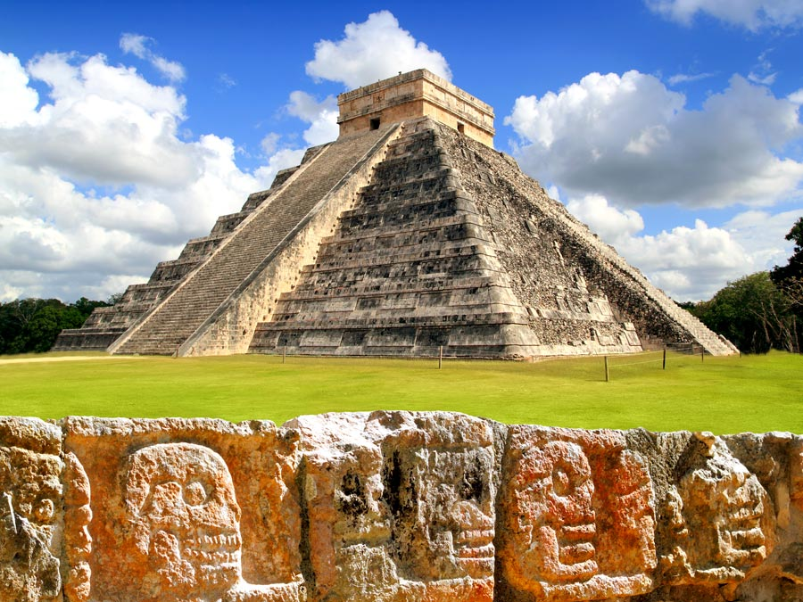

 Image Credit: Britannica
Latin America has a rich history that has greatly shaped its people, culture, and current conflicts. Explore how the Columbian Exchange changed the entire globe through European contact to what the Europeans believed to be a New World. See how Europe's contact with Latin America shapes the ethnic groups and blending of different cultures that are practiced in Latin America today. Explore how Cuba's relationship with the United States changes when Cuba becomes a communist coutry and examine their relationship today. Lastly, see how narcoterrorism in Latin America has resulted in a large exodus of Latin Americans to the United States to seek refuge. Be fascinated, make inquiries, and enjoy Latin America's engaging history!
SS6H1- Explain conflict and change in Latin America.Before European contact, pre-Columbian America was a different region. Using the following lessons and resources, learn how the Columbian Exchange changed the culture and demographics in Latin America.
Watch this Read Aloud of "Encounter" by Jane Yolen on YouTube. Then, use evidence from the story to claim whether we should or should not celebrate Columbus Day.
Since the Cuban Revolution, Cuba and the United States have had a complicated relationship that still exits today. Use the following lessons and resources to learn more about how Cuba and the US forged this relationship.
Need a good introduction to the Cuban Missle Crisis? Watch this TED Ed video!
Try this lesson from Stanford History Education Group. It's free to sign up!
For the past few decades, Latin America has been ravaged in conflict that has caused many Latin Americans to immigrate the the United States. Find out the factors that have led many to find a new life in the United States.
Contributors: If you have any great lessons and resources you can add to this page, please share what you have! If you plan to use other teacher's lessons and resources, be willing to share your great ideas! Your contribution matters! Users: Your feedback is important to GeoSources! This website is and always will be a work in progress. If there is anything we can do to make your learning experience better, please email us at geosources@gmail.com.
Last Updated: October 31, 2021